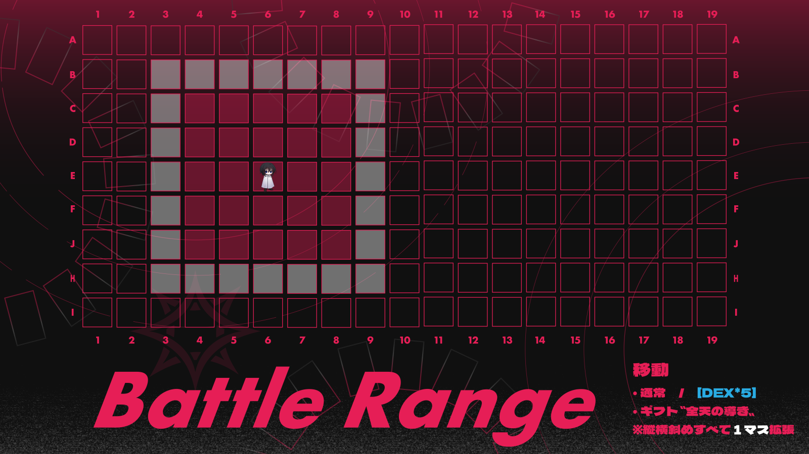
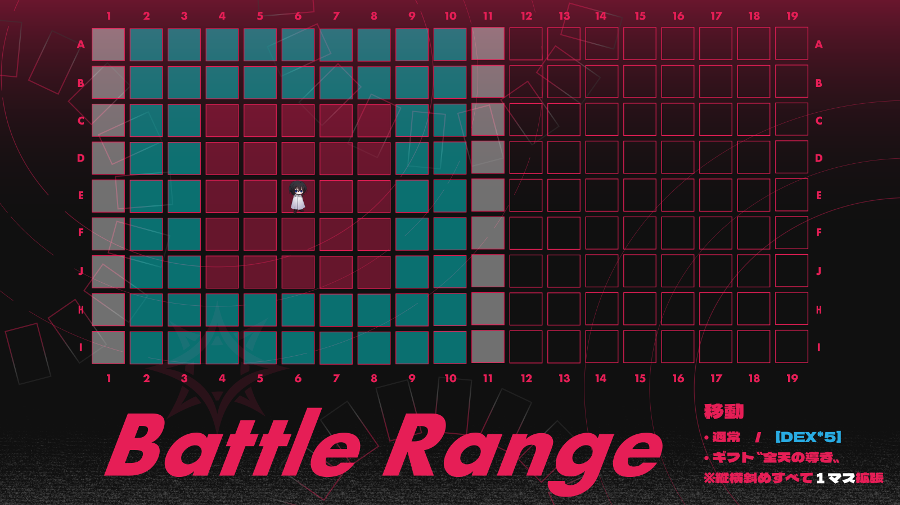

| 移動ダイスロール | 移動可能範囲 あるいは処理結果 |
|---|---|
| ［DEX*5］を行わない | 0マス（その場に留まる）
あるいは1～2マス以内 |
| ［DEX*5］に成功 | 3～4マス以内 |
| ［DEX*5］に決定的成功 | 【02～05】：
5～6マス以内 【01】 ： 7マス以内 |
| ［DEX*5］に失敗 | 0マス（その場に留まる）
あるいは1～2マス以内 |
| ［DEX*5］に致命的失敗 | 【96～99】：
通常移動まで含めて失敗する。足を取られ、自身がターン開始時にいた場所から動くことができない。 【100】 ： 【96～99】の処理に加え、次の自身の手番まで〈回避〉ができなくなる。 本ラウンドの場合は本ラウンドの手番、【運命の輪】ラウンドの場合は【運命の輪】ラウンドの手番まで。次のラウンドに【運命の輪】ラウンドが発生しなかった場合は、本ラウンド終了時に解除。 |